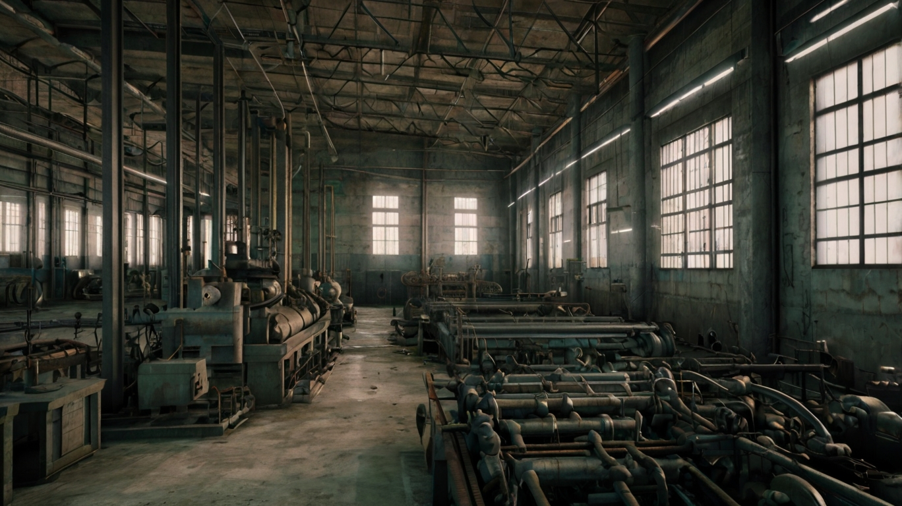

A Revolução Industrial, um dos capítulos mais marcantes da história da humanidade, desdobrou-se como uma metamorfose radical que delineou uma transição monumental da sociedade. Emergiu das cinzas do passado rural, erguendo-se como um farol de mudança na aurora do século XVIII. Inicialmente, alicerçada nas terras férteis da Inglaterra, suas raízes se alastraram vigorosamente, entrelaçando-se com os tecidos econômicos de nações distantes.
Com um ímpeto sem precedentes, a Revolução Industrial desvelou-se como uma sinfonia de avanços tecnológicos, desafiando as fronteiras do conhecimento humano. Do tear mecânico à máquina a vapor, cada invenção fervilhava com a promessa de uma nova era, delineando o horizonte com as cores do progresso e da inovação.
Entretanto, sua verdadeira essência ressoou além dos corredores das fábricas e das paredes das oficinas. A Revolução Industrial não era apenas um fenômeno técnico, mas uma epopeia social e econômica. As ondas de mudança varreram as antigas tradições agrárias, arrancando as raízes da sociedade rural e plantando-as nos solos fecundos das cidades industriais.
A economia, outrora dominada pelas colheitas e pelo pastoreio, transformou-se em um caldeirão fervente de produção e comércio. As cidades, antes adormecidas em uma quietude rural, floresceram com a vida e a energia pulsante das máquinas e dos trabalhadores. Os centros urbanos, como corações palpitantes, bombeavam o sangue da industrialização para os confins do mundo.
Contudo, essa ascensão meteórica não foi desprovida de desafios e contratempos. Enquanto as chamas da Revolução Industrial iluminavam o caminho para o futuro, também lançavam sombras sombrias sobre o presente. As condições de trabalho nas fábricas eram frequentemente desumanas, com jornadas exaustivas e ambientes perigosos, onde homens, mulheres e crianças labutavam em busca de sustento.
Além disso, o êxodo rural, embora tenha alimentado o ímpeto da industrialização, deixou cicatrizes profundas nas comunidades agrícolas. O campo, outrora o epicentro da vida e da comunidade, transformou-se em um cenário de desolação e abandono, enquanto suas almas migravam em busca de novas oportunidades nas cidades efervescentes.
No entanto, apesar dos desafios, a Revolução Industrial forjou o mundo moderno à sua imagem. Ondas de mudança, uma após a outra, moldaram a paisagem da civilização, inaugurando uma era de inovação e progresso sem precedentes. A economia floresceu, as cidades expandiram-se e a sociedade evoluiu, inaugurando um novo capítulo na história da humanidade.
O êxodo rural desencadeou uma onda sísmica de transformação que reverberou profundamente nas comunidades agrícolas, desencadeando uma metamorfose social, econômica e cultural sem precedentes. Sob o peso das mudanças econômicas, muitos camponeses e trabalhadores rurais se viram compelidos a abandonar as terras ancestrais em busca de oportunidades nas florescentes fábricas urbanas, onde aspiravam a encontrar um horizonte de condições de vida mais auspiciosas e uma escada rumo à ascensão social.
No entanto, as promessas da urbanização muitas vezes se chocavam com a dura realidade das linhas de montagem e das engrenagens industriais. Longas jornadas de trabalho consumiam os dias e as noites, enquanto as condições insalubres das fábricas cobravam um tributo impiedoso à saúde dos trabalhadores. Os salários escassos eram malabarismos precários para sustentar famílias inteiras, muitas vezes deixando aspirações de melhoria de vida pendendo na corda bamba da sobrevivência diária.
Nesse cenário de desafios e adversidades, o êxodo rural se revelou não apenas como uma mudança de geografia, mas como uma odisséia humana, marcada pela busca incessante por esperança e progresso em meio às sombras da incerteza.
Apesar dos obstáculos enfrentados, o êxodo rural desempenhou um papel crucial no impulsionamento do crescimento urbano e no florescimento da indústria, catalisando uma era de urbanização vertiginosa e expansão econômica sem precedentes. As cidades, antes adormecidas em uma quietude provinciana, foram transformadas em centros fervilhantes de inovação e progresso. O surgimento de novas indústrias, como a têxtil, siderúrgica e de manufatura, redefiniu a paisagem urbana, pontuando-a com as chaminés altivas das fábricas e os zumbidos incessantes das máquinas.
Contudo, o êxodo rural também plantou sementes de desafios e adversidades, que germinaram em meio ao solo fértil da urbanização desenfreada. O crescimento acelerado das cidades deu origem às favelas, onde a pobreza e a precariedade se entrelaçavam em um emaranhado de desesperança. A superlotação, aliada à poluição e à propagação de doenças epidêmicas, tornou-se uma sombra sombria pairando sobre os horizontes urbanos.
Além disso, muitos trabalhadores, atraídos pelas promessas de uma vida melhor nas fábricas, encontraram-se enredados na teia da exploração e da injustiça. Jornadas exaustivas, condições de trabalho insalubres e salários injustos eram apenas algumas das realidades cruéis que confrontavam os operários nas linhas de produção. No entanto, em meio a esses desafios, brotaram os rebentos da resistência e da luta por direitos trabalhistas, semeando as sementes da mudança e da justiça em um solo fértil de descontentamento e determinação.